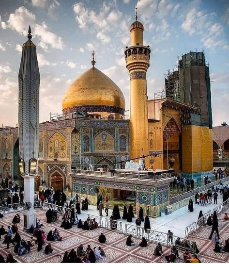

Najaf
Najaf is a famous shrine of Imam Ali and its historical religious significance...
Read moreWelcome to our touristic website! Explore unique monuments around the world and learn about their history and culture.
Najaf is a famous shrine of Imam Ali and its historical religious significance...
Read more
An ancient engineering marvel in Iran know for its canals, water mills, and impressive water structures.
Read moreA massive rock fortress in Sri Lanka know for its ancient palace, frescoes, and breathtaking height.
Read more
A giant fort in pakistan famous for its 40 huge bastions and striking presence in the cholistan desert.
Read moreKnown for its 12th-centurey rock-carved churches, lalibela is one of Ethiopia's most unique holy sites.
Read more